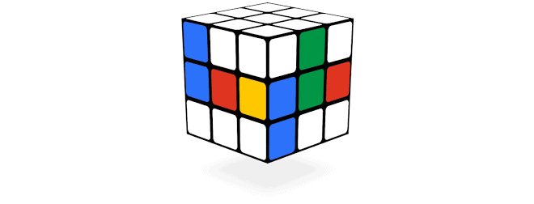

Welcome to Rubik Cube Tutorial!
Many people give up on the Rubik's Cube after playing it for only a few minutes
and never pick it up again.
Here is the secret:
It's almost impossible to solve the cube without knowing the basic solution
method. The solution pamphlet that comes with a store-bought cube can be very
confusing, so here you will learn it in simple steps.
You do not have to memorize long complicated algorithms to solve the cube using
this article.
Watch the Video shown below
After learning and Practicing you would be able to solve rubik cubes as solved
by our Master.
For this,Firstly we will understand or know the basic and most popular 3*3
Rubik Cube .
For this click here to move..
Click Here
About and History of Rubik Cube are Shown below
What is Rubik Cube

Rubik's Cube is a 3-D combination puzzle ,each of the six faces was covered by
nine stickers, each of one of six solid colours: white, red, blue, orange,green,
and yellow. Some later versions of the cube have been updated to use coloured
plastic panels instead, which prevents peeling and fading.
In currently sold models, white is opposite yellow, blue is
opposite green, and orange is opposite red, and the red, white, and blue are
arranged in that order in a clockwise arrangement.On early cubes, the position
of the colours varied from cube to cube. An internal pivot mechanism enables
each face to turn independently,thus mixing up the colours. For the puzzle to be
solved, each face must be returned to have only one .Similar puzzles
have now been produced with various numbers of sides, dimensions, and stickers,
not all of them by Rubik.
History of Rubik Cube
In the mid-1970s, Ernő Rubik worked at the Department of Interior Design
at the Academy of Applied Arts and Crafts in Budapest. Although it is
widely reported that the Cube was built as a teaching tool to help his
students understand 3D objects, his actual purpose was solving the
structural problem of moving the parts independently without the entire
mechanism falling apart. He did not realise that he had created a
puzzle until the first time he scrambled his new Cube and then tried
to restore it. Rubik applied for a patent in Hungary for his
"Magic Cube" (Bűvös kocka in Hungarian) on 30 January 1975, and
HU170062 was granted later that year.
The first test batches of the Magic Cube were produced in late 1977 and
released in Budapest toy shops. Magic Cube was held together with
interlocking plastic pieces that prevented the puzzle being easily pulled
apart, unlike the magnets in Nichols's design. With Ernő Rubik's
permission, businessman Tibor Laczi took a Cube to Germany's Nuremberg
Toy Fair in February 1979 in an attempt to popularise it. It was
noticed by Seven Towns founder Tom Kremer, and they signed a deal with
Ideal Toys in September 1979 to release the Magic Cube worldwide.
Ideal wanted at least a recognisable name to trademark; of course,
that arrangement put Rubik in the spotlight because the Magic Cube was
renamed after its inventor in 1980. The puzzle made its international
debut at the toy fairs of London, Paris, Nuremberg, and New York in
January and February 1980.
After its international debut, the progress of the Cube towards the toy
shop shelves of the West was briefly halted so that it could be
manufactured to Western safety and packaging specifications. A lighter
Cube was produced, and Ideal decided to rename it. "The Gordian Knot" and
"Inca Gold" were considered, but the company finally decided on "Rubik's
Cube", and the first batch was exported from Hungary in May 1980.